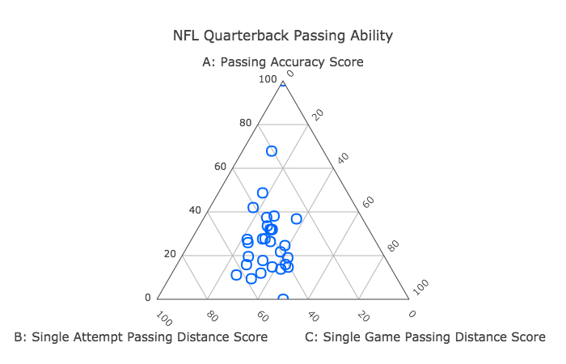
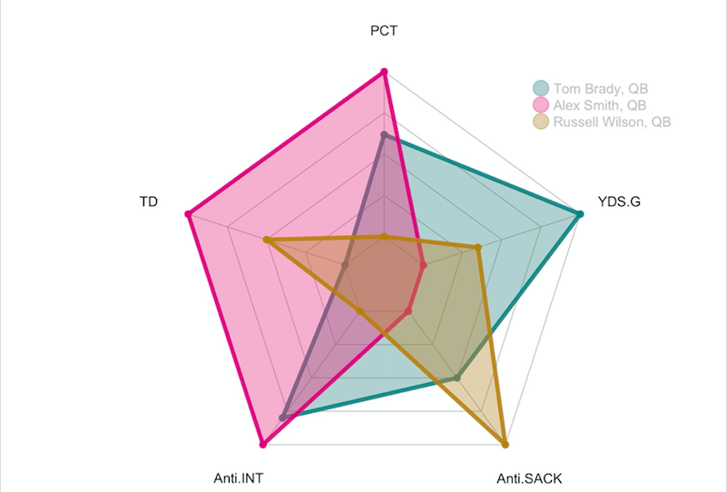
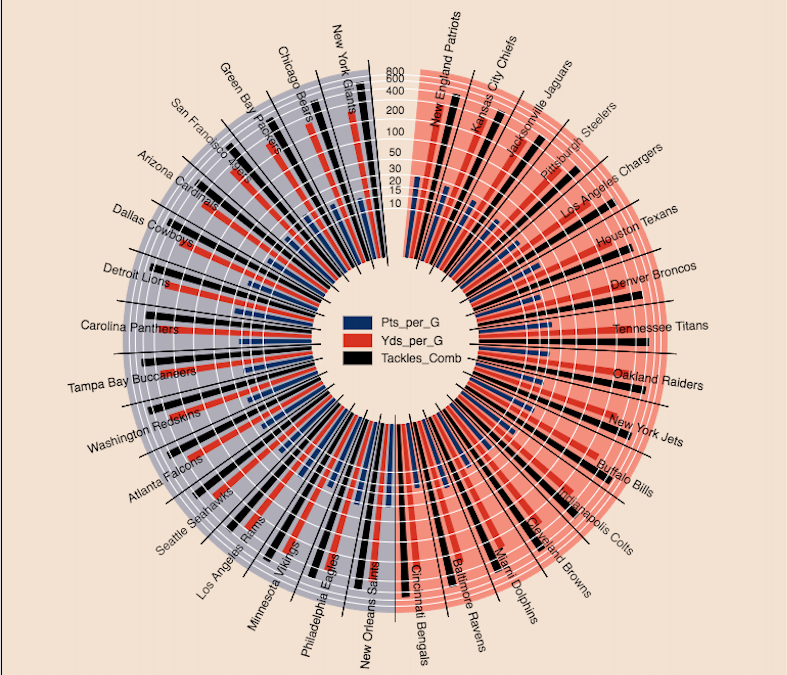
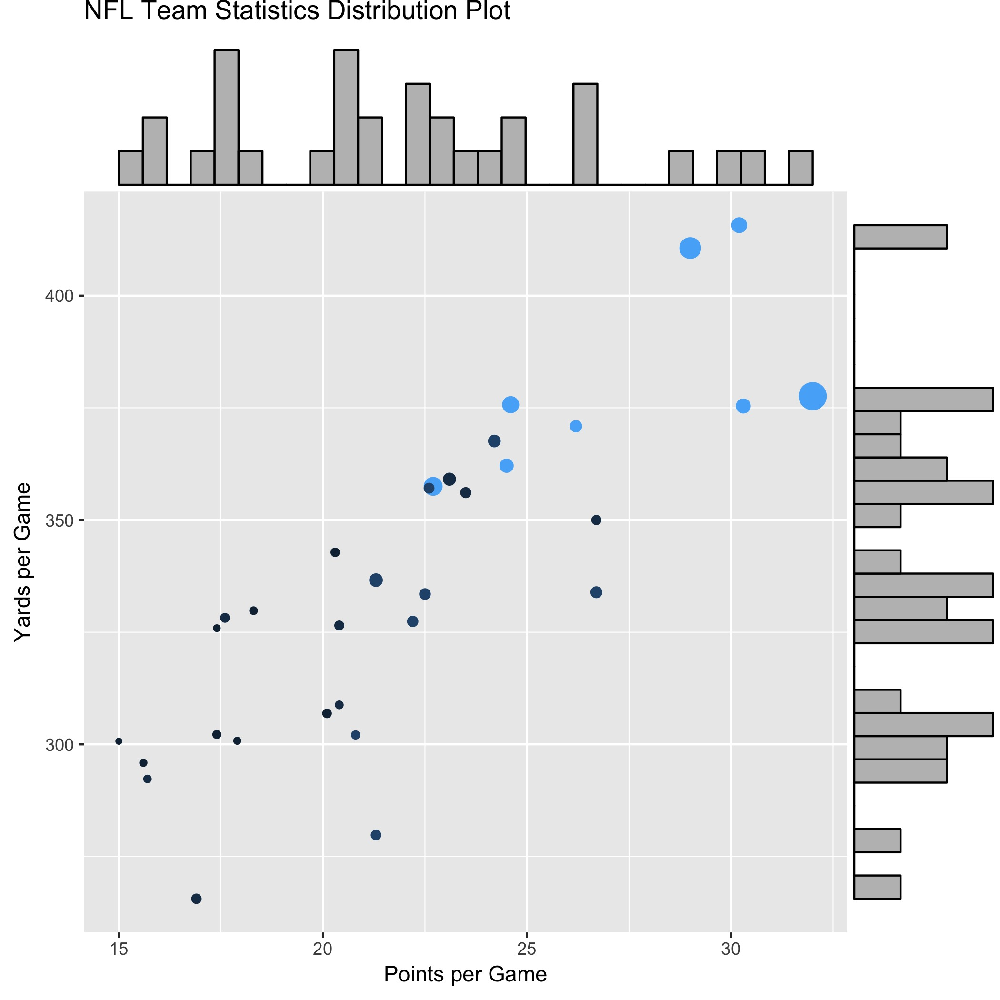

|

NFL Quarterback
Passing Ability
Ternary Plot
|
Vis tool: plotly(Python)
Description:
Statistics of 30 quarterbacks in current 2017-2018 NFL season is used in ternary visualization. This visualization shows the relative passing ability of a quarterback in three aspects which are passing accuracy, single attempt passing distance and single-game passing distance. These three aspects show that if a quarterback is good at passing accuracy or is good at making long passes or good at using passing as offense tool relatively.
From the ternary plot, star quarterback such as Tom Brady, Russell Wilson, and Aaron Rodgers is in the middle part of the triangle, which shows their comprehensive passing skill. On the other hand, the ternary plot also shows some quarterbacks have specific preference in passing such that Jared Goff is a big fan of making long distance pass in single attempt.
|
|

NFL Quarterback
Radar Plot
|
Vis tool: R(ggplot, fmsb)
Description:
To get a detailed comparison among quarterbacks, I make a radar plot of three top quarterbacks (Tom Brady, Alex Smith, Russell Wilson) in NFL league. From radar plot, we can see completely different playing style as a quarterback. Tom Brady, a famous game-winner, is an accurate passer with few interception, and his passes are likely to score for New England. Alex Smith is good at making long passes but lack of ability to score. Russell Wilson has outstanding anti-sack performance, which is due to his famous rushing skills as a quarterback.
|
|

NFL Team Statistics
Comparison Plot
|
Vis tool: Bokeh(Python)
Comparison plot shows the performance of every team in NFL season 2017-2018. Two offense statistics (points per game and yards per game) and one defense statistics (Combined tackles number) are in included in visualization.
|
|

NFL Team Statistics
Distribution Plot
|
Vis tool: R(ggplot, ggExtra)
Description:
Distribution plot shows how each located in terms of yards per game and points per game. On the side of the plot, there are histograms of yards per game and points per game. Furthermore, size of points represents teams’ power ranking (higher the larger), and color represents teams’ ranking in division (higher the lighter).
From the plot, we may see that better usually have better higher statistics.
Furthermore, we found the statement that team with higher power ranking has higher rank in division is only true for teams at either very top teams or very bottom.
|
Code and Data for Ternary Plot
Code and Data for Radar Plot
Code and Data for Comparison Plot
Code and Data for Distribution Plot
{kind=link}
{kind=link}